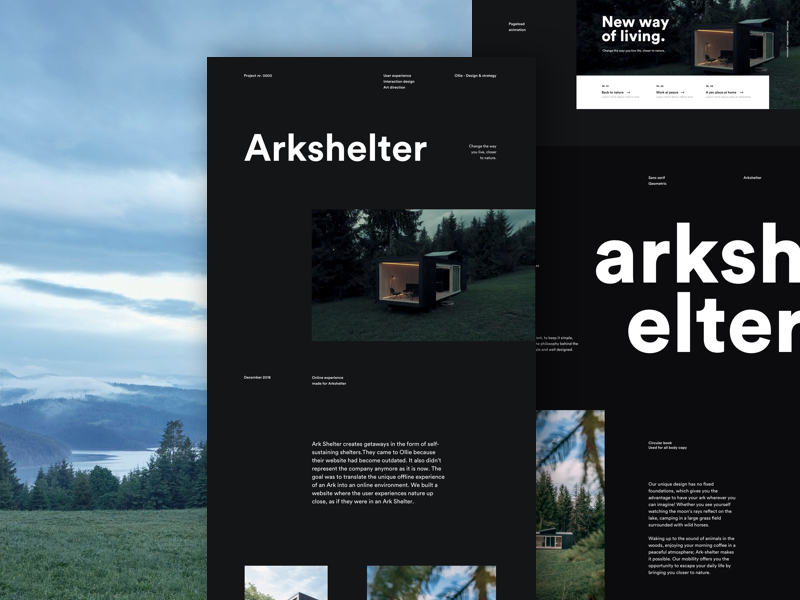
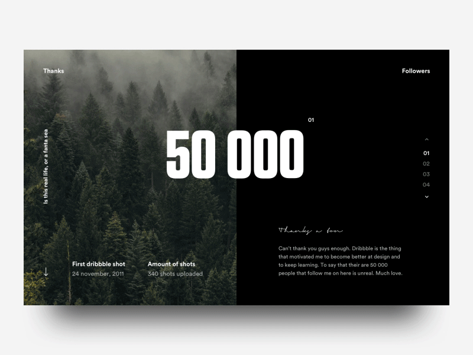
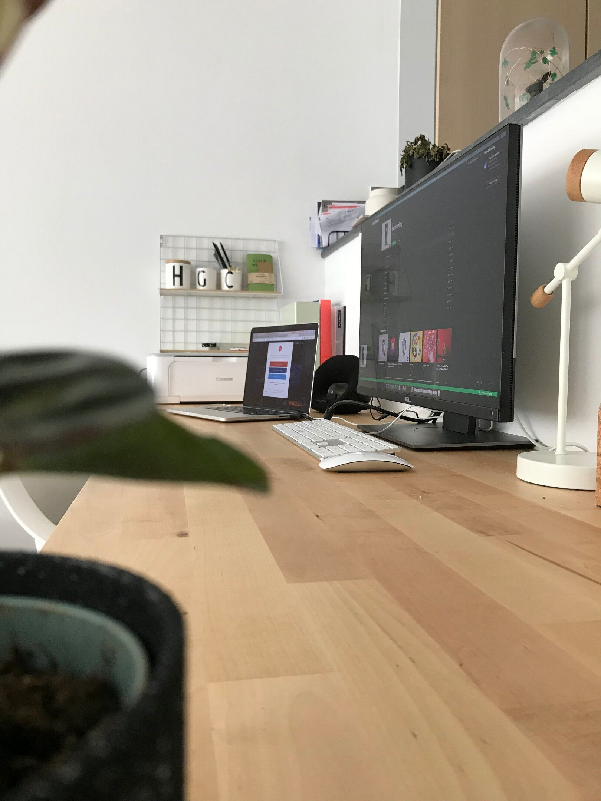
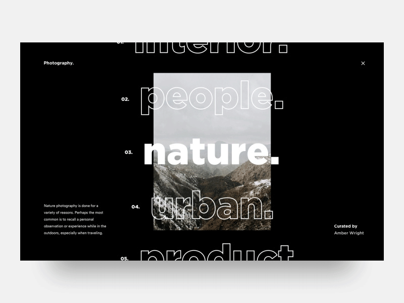

Stefan Vladimirov
Chief Creative at Swipes. Loves order and beauty. Always striving to achieve the
balance between function
and aesthetics.
Designer
Short intro
First of all big thanks for the interview man! I think this sentence describes me the best. My name is Gil Huybrecht, i’m a designer, skateboarder and (online) teacher. I love everything about design with a passion. I’m also a big animal lover and i’m a huge Friends & How i met your mother fan haha.
What do you do for a living?
I work full time at a branding agency called Ollie in Ghent, Belgium. At ollie i’m responsible for anything creative, so i wear a lot of hats. Everything from identity design to websites. I really like the variety the job has. Besides that I also freelance after hours for businesses and agencies all over the world and I also have some classes on Skillshare which i’m really proud of, it was a big step for me, getting on camera etc but i couldn’t be happier that i did it. In the future i want to continue sharing knowledge through courses, free content, etc. But first I need to focus on renovating me and my girlfriend’s house that we just bought, super cool learning about construction.
When did you find your passion for design?
I was always interested in the graphic design scene, I started a high school studying graphic design, this was mostly learning illustrator, indesign & photoshop. When i started college i still wasn’t sure what i wanted to do. In my first year at college there was a guy in my class that was doing all kinds of skeumorphic designs and that really got me fascinated. I started downloading PSD fils from websites like 365 PSD and started digging in the layerstyles and that’s kind of how my passion for webdesign started. After that identity design quickly follow because i really liked doing complete projects instead of only the web part.
How long have you been doing design?
I started freelancing in college so i think I can see I'm ‘officially’ doing it for 6 years or so.
Describe the beginning of your day
My typical weekday consist of getting out of bed at around 7am, feeding our animals, talking a shower and eating breakfast (I love breakfast). After that I leave for work, i have to drive 45min to work so i’m almost always listen to a good podcast about design or business. When i arrive at work i try to do my emails first to get that out of way. Sometimes when i have to do a big chunk of design work I try to that first before checking my email. Email can really drain the creativity for me, especially when it’s like 20 emails with small to do’s haha.
What’s your workspace?
What’s your source of inspiration?
Inspiration can come from anywhere really for me. It can be simply from dribbble or behance but i can be from going out and skating. I also like editorial, magazine design and that also inspires me sometimes. Fashion is also a great source of inspiration.
What works are you most proud of?
For the last year the 2 projects i’m most proud of is the Ark-Shelter project and Zet. The Ark-Shelter website is launching in a couple of weeks, i’m really stoked on that!
What are the tools you use in your day to day life?
Sketch, Photoshop, Principle, After Effects, Premiere pro, Illustrator, Spotify and Slack.
Do you follow any set of principles for your work?
I don’t really follow any set of principles really. I do find it really important to define goals for the project. Let’s say i’m doing a website, i’ll first do a meeting with the client where we’ll define the primary goal and the secondary goals for the project. Defining what would be project success together with the client is also really important.

What’s your favourite movie?
There are so many good movies haha. I like most of Quentin Tarantino’s work. Django unchained and Inglourious Basterds are my favourites. I also love all the Star wars movies and all the Harry Potter movies and the new Fantastic beasts ones. I’m probably forgetting a lot of others but there are just to many good ones haha.
What's your favourite book?
I’m not that much of reader but I'm trying to read more in 2019. A really good book business wise is Zag from Marty Neumeier. I’m now ready Scramble, it’s a business book about agile strategy but it’s written as a thriller. Supercool read.
What advice would you give to people that start out with design?
I would say try and not be overwhelmed. Try to get good at visual design first, when you are good at that, start learning about UX design, after that you could learn about business & strategy. Depends on what your interests are but that’s the way it went for me. Also, enjoy failure, when you fail don’t be like ‘i’m never gonna be good at this’, see it as a chance to learn something from it. You should see me first designs. 😅
Have you ever thought of empowering your creative community in any way, shape or form?
For sure! I want to continue doing the courses and in the future I’m probably gonna try out doing a newsletter (good chance for me to learn more about copywriting). Giving back to the community is really what motivates me, that and seeing business grow through the power of design are 2 things I really love!
Meet Gil on Social Media
Dribbble Instagram TwitterThank you for the interview, Gil. Keep up the good work with the courses on landing those kickflips! 🤘